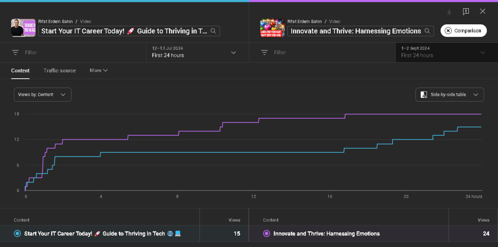

Analyzing YouTube Video Performance in the First 24 Hours: A Case Study

When you upload a new video to YouTube, the first 24 hours are crucial for understanding its initial performance and potential reach. Today, we'll analyze two videos uploaded by Rifat Erdem Sahin: "Start Your IT Career Today! 💻 Guide to Thriving in Tech 🌐" and "Innovate and Thrive: Harnessing Emotions". We'll dive into the data from their first 24 hours to uncover insights and trends that can inform future content strategy.
Overview of Video Performance
In the first 24 hours after being published, both videos gained traction among viewers, but with different engagement patterns:
-
"Start Your IT Career Today!" - This video received a total of 15 views within the first 24 hours.
-
"Innovate and Thrive: Harnessing Emotions" - This video performed slightly better with a total of 24 views in the same time frame.
Comparative Analysis of Viewer Engagement
The performance graph provided shows the cumulative views over time for both videos. Here's a breakdown of the key observations:
-
Early Engagement: Both videos started with a similar number of initial views in the first few hours. However, "Innovate and Thrive: Harnessing Emotions" showed a steadier increase in views over time compared to "Start Your IT Career Today!".
-
Growth Patterns: "Start Your IT Career Today!" saw a quick rise in views initially but plateaued around the 12-hour mark. In contrast, "Innovate and Thrive: Harnessing Emotions" continued to gain views at a more consistent rate throughout the 24-hour period.
-
Viewership Plateaus and Spikes: The graph indicates that "Start Your IT Career Today!" experienced periods of stagnation, where no additional views were gained for several hours. Conversely, "Innovate and Thrive: Harnessing Emotions" maintained a more continuous upward trend, suggesting consistent viewer interest or better promotion during this period.
Key Insights and Recommendations
-
Content Resonance: The steady growth of views for "Innovate and Thrive: Harnessing Emotions" indicates that content focused on emotional intelligence and personal growth may resonate more with the audience. It's essential to analyze why this topic may have held the audience's interest longer and more consistently.
-
Promotion Strategies: The more consistent viewership pattern of the second video could also suggest more effective promotion strategies. This might include better use of social media, more engaging thumbnails or titles, or effective leveraging of the video’s keywords and tags.
-
Audience Retention: The initial plateauing of "Start Your IT Career Today!" suggests that while the video attracted initial interest, it didn't maintain that momentum. This could be a sign that while the topic was appealing, the content itself may need refining to sustain viewer interest.
-
Continuous Monitoring and A/B Testing: Given the differences in performance, continuous monitoring and applying A/B testing strategies can help determine what works best. Testing different titles, thumbnails, descriptions, and even content pacing can provide insights into audience preferences.
Conclusion
The first 24 hours are a critical period for understanding how well a video is performing and what adjustments might be needed for future content. By examining the differences in viewership patterns between "Start Your IT Career Today!" and "Innovate and Thrive: Harnessing Emotions," content creators can glean valuable insights into their audience's preferences and behavior. Moving forward, focusing on content that resonates, coupled with effective promotion strategies, will be key to enhancing video performance on YouTube.
Stay tuned for more insights and strategies on optimizing your YouTube content!
Reference
https://studio.youtube.com/video/j5lku3LYoK4/analytics/tab-overview/period-default/explore?entity_type=VIDEO&entity_id=j5lku3LYoK4&time_period=since_publish%2Ctime_period_unit_nth_days%2C1&explore_type=TABLE_AND_CHART&metric=VIEWS&granularity=DAY&t_metrics=VIEWS&t_metrics=WATCH_TIME&t_metrics=SUBSCRIBERS_NET_CHANGE&t_metrics=TOTAL_ESTIMATED_EARNINGS&t_metrics=VIDEO_THUMBNAIL_IMPRESSIONS&t_metrics=VIDEO_THUMBNAIL_IMPRESSIONS_VTR&dimension=VIDEO&o_column=VIEWS&o_direction=ANALYTICS_ORDER_DIRECTION_DESC&comparison_entity_id=yKN0ParJ0fo&comparison_time_period=since_publish%2Ctime_period_unit_nth_days%2C1&comparison_entity_type=VIDEO
Imported from rifaterdemsahin.com · 2024